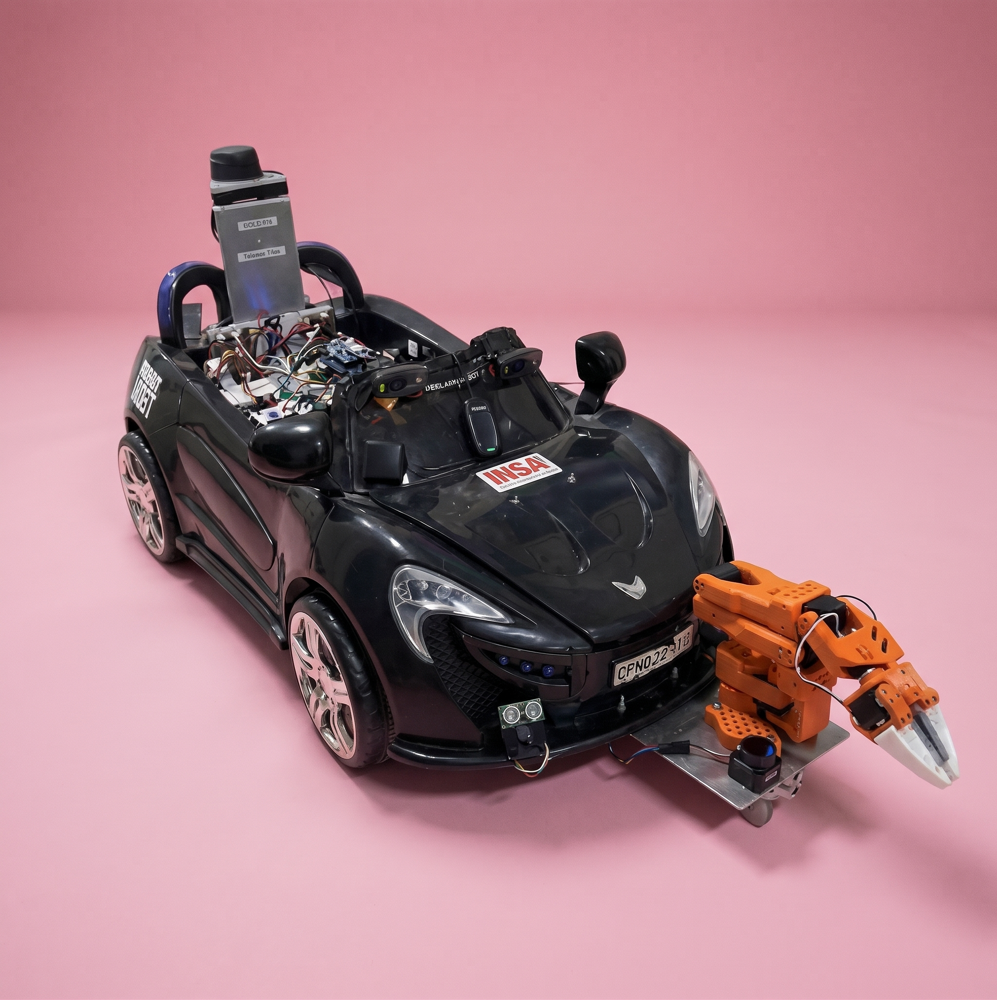

Transforming the GEIcar platform into an active, energy-monitored waste collector for indoor public spaces using ROS 2, AI vision, and real-time electrical telemetry.
The EcoSense Project develops a smart, eco-friendly navigation system that detects and collects waste while minimizing its environmental footprint. Integrating advanced sensor fusion, artificial intelligence, and real-time environmental analysis, the vehicle autonomously perceives its surroundings and reacts dynamically. Additionally, the project prioritizes energy efficiency by continuously tracking and optimizing power consumption to advance sustainable mobility.

Combining environmental monitoring, automated collection, and intelligent systems.
Integrated robotic arm providing a complete zero-human-contact waste collection workflow.
Advanced target recognition, precise positioning, and docking within less than 10 cm from identified litter.
Real-time energy consumption tracking and environmental footprint monitoring for eco-driven autonomous operations.